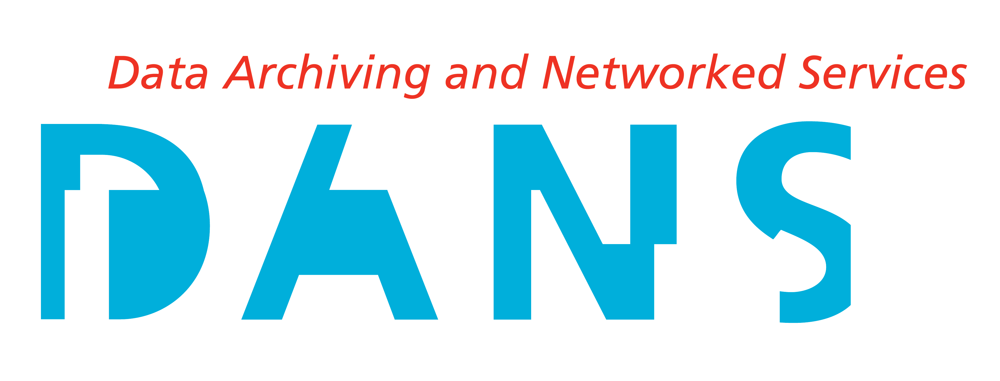

Ruben Taelman
Decentralised Web Symposium, 17 January 2020
Ghent University – imec – IDLab, Belgium

Source: An Intellectual Map of Science in the Spanish Empire, 1600-1810
Publisher-centric → Pod-centric
Registration, certification, awareness, archiving
Linked Data, Solid, Web APIs, Querying, Versioning